sistema de diseño Mooza
La semana es la grilla: siete columnas, una por día. Cada cartel, story y pantalla se arma sobre ella, con color plano, palabras en serif y números en grotesca.
Siete columnas, margen y medianil ajustables
Margen y medianil son un porcentaje del ancho, así que escalan con cualquier formato. Los titulares y los números se miden en columnas: si cambias el margen o el medianil, el texto se reajusta y la composición se mantiene. Prueba los controles.
Ver los seis elementos- Columnas
- Siete, siempre. Las filas cambian con el formato: 9 en 4:5 y 16 en 9:16.
- Margen
- Del 3 al 12 % del ancho. Estándar 6 %. Más margen da más aire, menos margen da más densidad.
- Medianil
- De 0,6 a 3,5 %, y como máximo la mitad del margen.
- Pie
- La última fila de todo cartel. El logo, de dos columnas, a la izquierda; la fecha, a la derecha. Nada más entra ahí.
- Imagen
- Ocupa celdas completas y nunca llega al borde. En los ejemplos es un cuadrado azul.
La misma grilla en cada formato
Siempre son siete columnas. Lo que cambia es el número de filas, que se elige para que la celda quede casi cuadrada: alto de celda = (alto − 2 × margen − (filas − 1) × medianil) ÷ filas. Medidas con margen 6 % y medianil 1,2 %.
| Formato | Tamaño | Filas | Alto de celda | Diseños | Uso |
|---|---|---|---|---|---|
| 4:5 | 1080 × 1350 px | 9 | 11,5 % | titular, número, foto, semana, agenda | Feed de Instagram y carrusel |
| A3 vertical | 297 × 420 mm | 11 | 10,7 % | titular, número, foto, semana, agenda | Afiche impreso y exterior |
| 1:1 | 1080 × 1080 px | 8 | 9,9 % | titular, número, foto, semana | Posts cuadrados |
| 9:16 | 1080 × 1920 px | 16 | 8,3 % | story | Stories y portada de reel |
| 16:9 | 1920 × 1080 px | 4 | 10,2 % | titular, número, foto | Slides, pantallas y banner web |
El logo no se redibuja
Se usan los archivos oficiales de assets/logos/ y sus variantes monocromas de kit/marca/. El degradé del original solo aparece sobre noche o azul. En el resto, el logo va plano.
Oficial sobre nocheEn los carteles el logo vive en el pie: la última fila, a la izquierda, con el ancho exacto de dos columnas.
Espacio libreMedia altura del logo por los cuatro lados.
Por debajo de 96 px se usa solo el ícono, nunca el logo reducido.
No deformarlo ni girarlo. No usar el degradé sobre amarillo, naranja o blanco. No recolorearlo con colores fuera de la paleta. No ponerlo sobre una foto sin duotono. No agregarle sombras, bordes ni efectos.
Cinco colores planos y un neutro
Orden de importancia: gris claro (el "blanco" de la marca, fondo de todo), azul (el color principal, en una zona) y amarillo o naranjo (solo acentos pequeños). Los colores nunca compiten. No hay degradados ni sombras.
#03021bTinta de textos y logo sobre gris.#1b1444Color principal: la zona de color y la foto.#fcee21Acento.#fbb03bAcento alternativo.#ffffffTexto y logo sobre azul.#f2f2f2El "blanco" de la marca: fondo de todo cartel y de la web.16,9 : 1Noche sobre amarillo. AA
11,1 : 1Noche sobre naranja. AA
18,2 : 1Noche sobre claro. AA
20,4 : 1Noche sobre blanco. AA
14,1 : 1Amarillo sobre azul. AA
17,1 : 1Blanco sobre azul. AA
1,8 : 1Blanco sobre naranja. No usar como texto
1,5 : 1Naranja sobre amarillo. No usar
Una sola familia, la jerarquía en el tamaño
Geist para todo. Peso 400 en titulares, nombres y textos; peso 500 en números, fechas, horas, precios y etiquetas. Licencia abierta (OFL) en Google Fonts. Lo que ordena la lectura es el tamaño, no el peso.
- TitularGeist 4001,4 columnas de alto de letra • interlínea 0,92 • tracking −0,05 em • mayúscula inicial
- Cuarteto de jazz en vivoGeist 400Nombre de evento, sala o artista • 0,95 columnas • mayúscula inicial
- 26–1 • 21:00 • $6.000Geist 500Números y datos • 2,2 columnas el número • cifras tabulares • tracking −0,04 em
- Música • Teatro • CineGeist 500Etiquetas de categoría • 0,2 columnas • mayúscula inicial
- Texto de cuerpo y de interfazGeist 40016 px, interlínea 1,5 • ancho de línea máximo de 65 caracteres
Ángulos rectos y sin sombras
En el tema claro, el de la web, el botón principal es azul con texto blanco y se vuelve amarillo al pasar el cursor. Los filtros activos y el destacado llevan el amarillo como acento. En el tema oscuro el botón principal es amarillo con texto noche.
Musas, sin figura
Mooza suena a musa. Nueve dibujos de trazo fino, en una tinta o en duotono, que acompañan la marca sin ilustrarla de forma literal: cada musa aparece por un objeto, no por una figura. El duotono es la tinta más un campo plano desplazado unos píxeles, como en un grabado mal registrado.
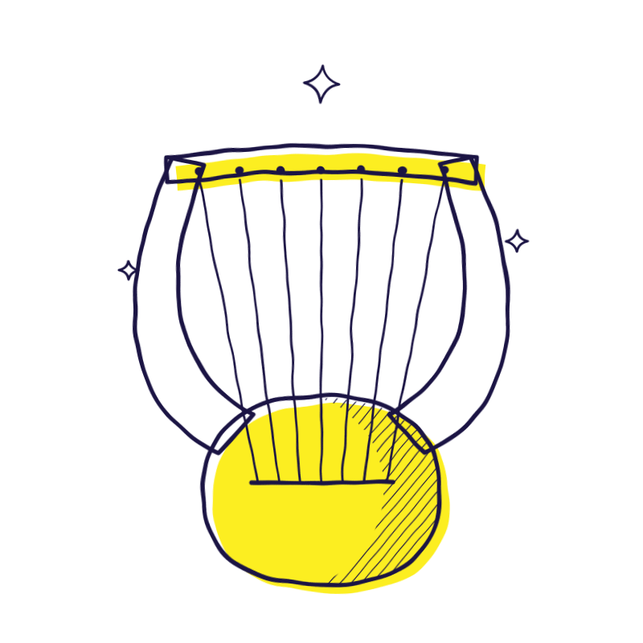
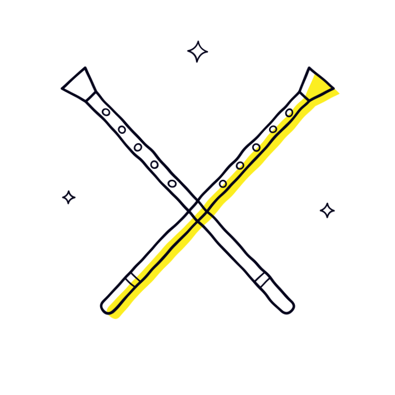
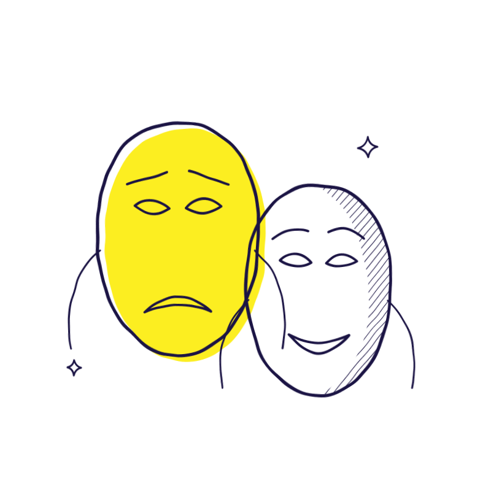
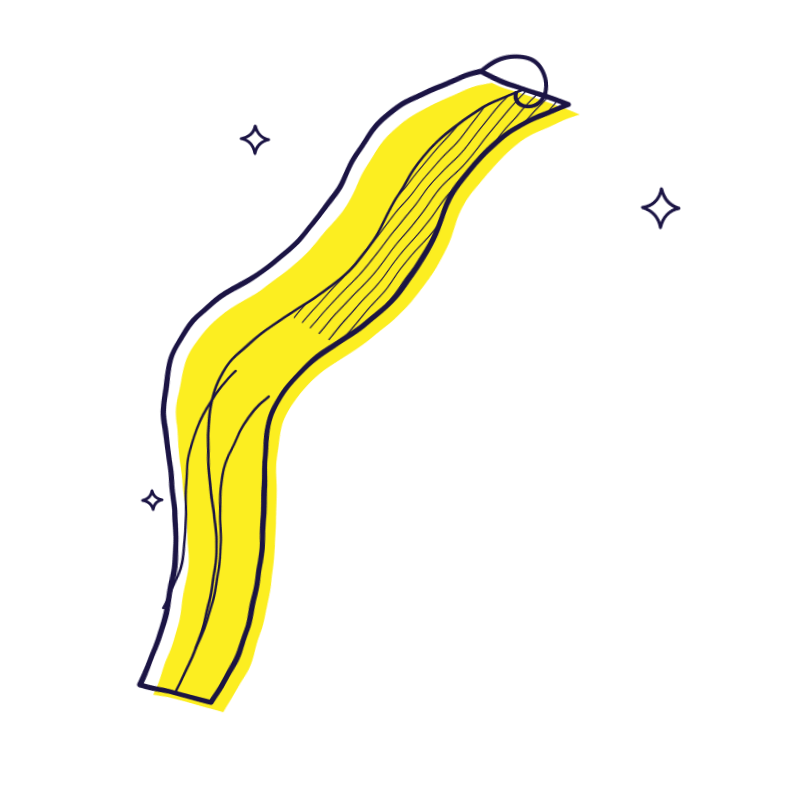
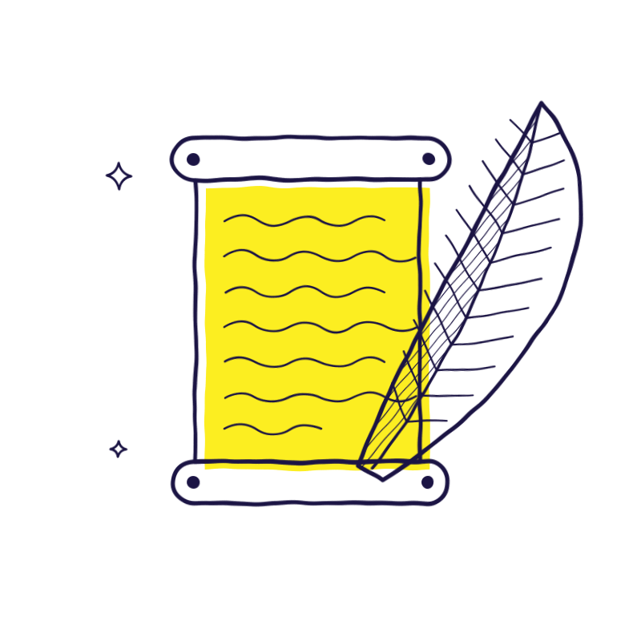
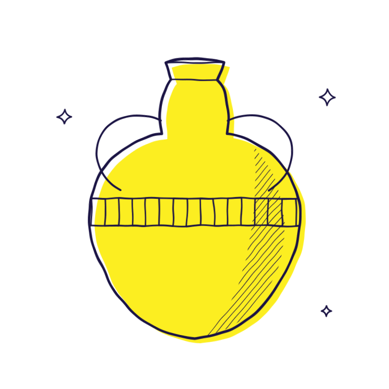
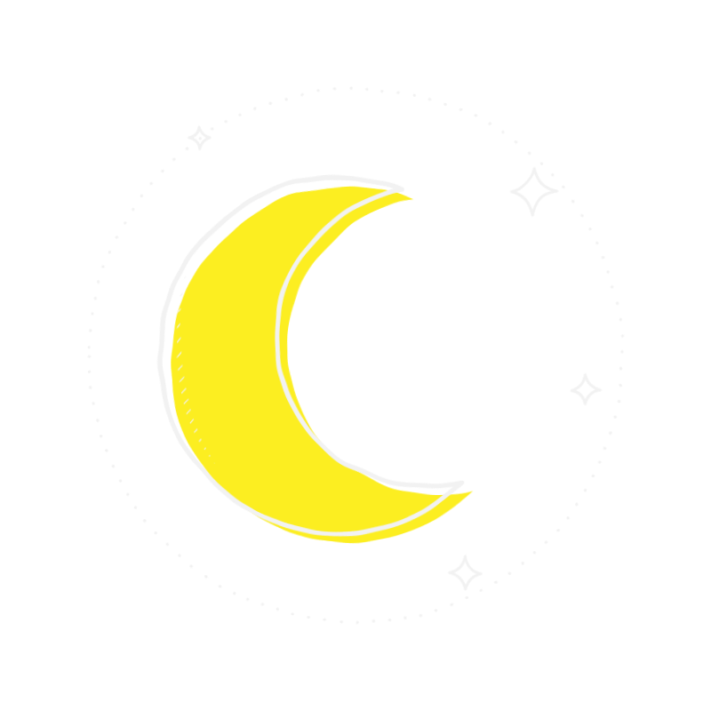
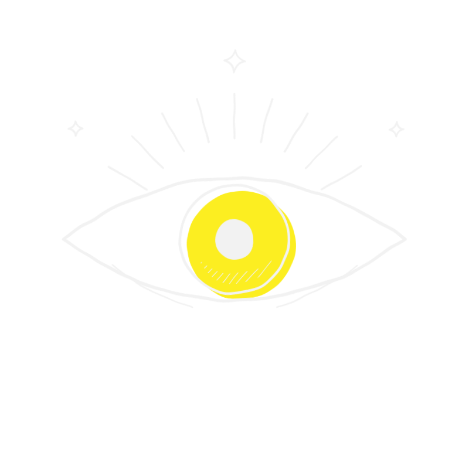
Cuatro versiones de cada dibujo: tinta (una sola tinta), amarillo y naranja (tinta noche con campo de color, sobre fondos claros) y noche (tinta clara con campo amarillo, sobre noche y azul).
Se usa un dibujo por pieza, de al menos 96 px de lado. Reemplaza a la foto cuando el evento no tiene una, según su categoría. Nunca va sobre una foto ni dentro de una celda de color que choque con su campo.
Los SVG usan un filtro de trazo a mano que se ve en navegadores. Para Figma o Illustrator están los PNG de la hoja de muestra en kit/ilustraciones/.
Duotono con los colores de Mooza
Las fotos se convierten a dos colores de la paleta: las sombras toman el color oscuro y las luces el claro. Una paleta por pieza, y la foto entra en celdas completas de la grilla.
Procedimiento: escala de grises por luminancia, niveles (punto negro y blanco en los percentiles 1 y 99, medios tonos y contraste) y mapa de degradado entre los dos colores, con un grano mínimo opcional. Se hace con la herramienta kit/duotono/index.html en el navegador, con kit/duotono/duotono.py por lotes o con los filtros de components/duotono/ en una web.
Tú, directo y sin exclamaciones
- TitularHay jazz, teatro y cineSerif, mayúscula inicial y sin punto de exclamación.
- Fecha26 oct – 1 novMes abreviado en minúscula y raya corta con espacios. Rango corto en grande: 26–1.
- Lugar y horaTeatro del Parque • 21:00Punto medio entre lugar y hora. Hora en 24 horas.
- Precio$6.000 • desde $5.000 • GratisPunto de miles, sin decimales. “Gratis” con mayúscula inicial, nunca “free” ni “GRATIS”.
- TratamientoMira, ven, guarda tu planTuteo. Sin voseo, sin emoji.
- CierreToda la agenda en mooza.clSe conserva la frase actual.
Lo que hay en la carpeta kit
- PlantillasLas 18 plantillas en un solo archivo SVG con texto editable: mooza-carteles.svg (vista previa).
kit/Cada plantilla por separado
agenda-a3.svg · agenda.svg · foto-16x9.svg · foto-1x1.svg · foto-a3.svg · foto.svg · numero-16x9.svg · numero-1x1.svg · numero-a3.svg · numero.svg · semana-1x1.svg · semana-a3.svg · semana.svg · story.svg · titular-16x9.svg · titular-1x1.svg · titular-a3.svg · titular.svg
- GrillasLas cinco grillas vacías en SVG: 4:5, A3, 1:1, 9:16 y 16:9.
kit/grillas/ - CeldasCuadrados rellenos y de contorno en los colores de la paleta, para armar composiciones a mano.
kit/celdas/ - MarcaLogo horizontal e ícono en noche y en amarillo plano, además de los oficiales en
assets/logos/.kit/marca/ - FotosMarcador de posición y reglas de recorte para las fotos de eventos.
kit/fotos/ - IlustracionesNueve dibujos de musas en cuatro versiones, en SVG, más hojas de muestra en PNG.
kit/ilustraciones/ - DuotonoHerramienta en el navegador, script por lotes y reglas para convertir fotos.
kit/duotono/ - GeneradoresScripts que regeneran las plantillas y las ilustraciones.
kit/build-kit.mjsykit/ilustraciones/build-ilustraciones.mjs


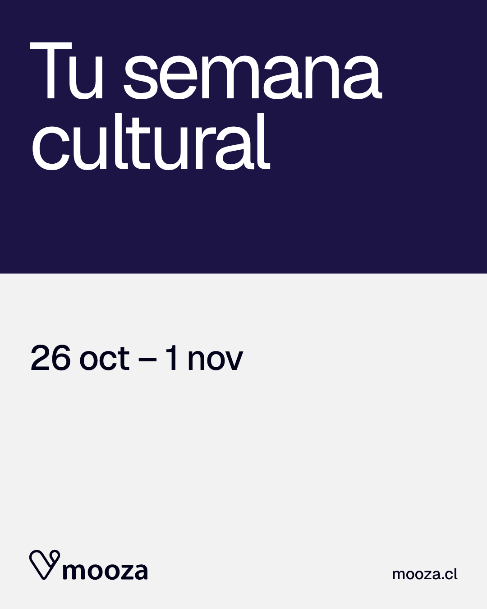
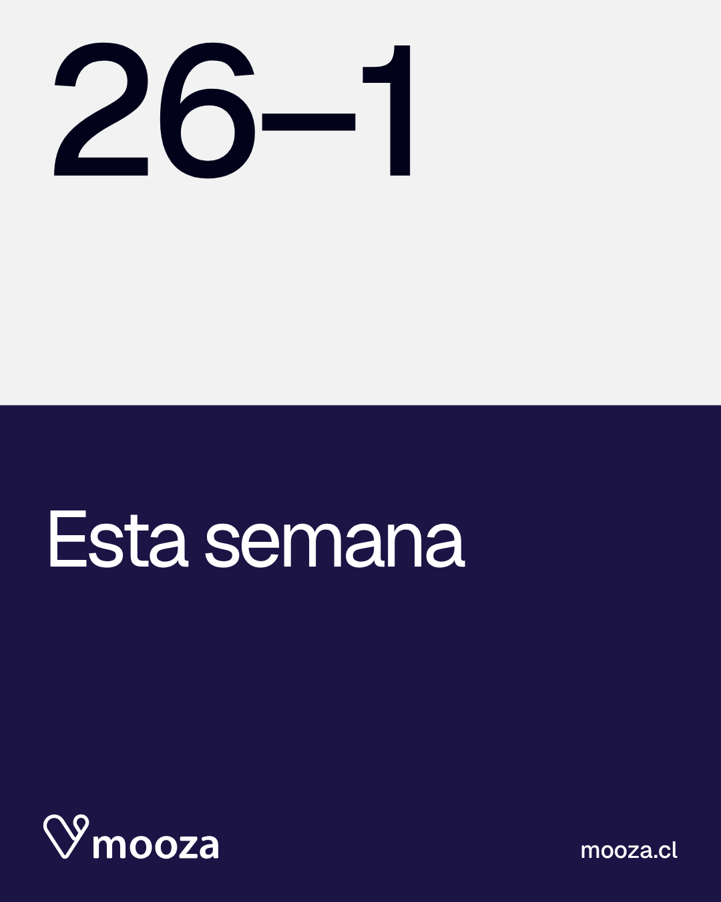
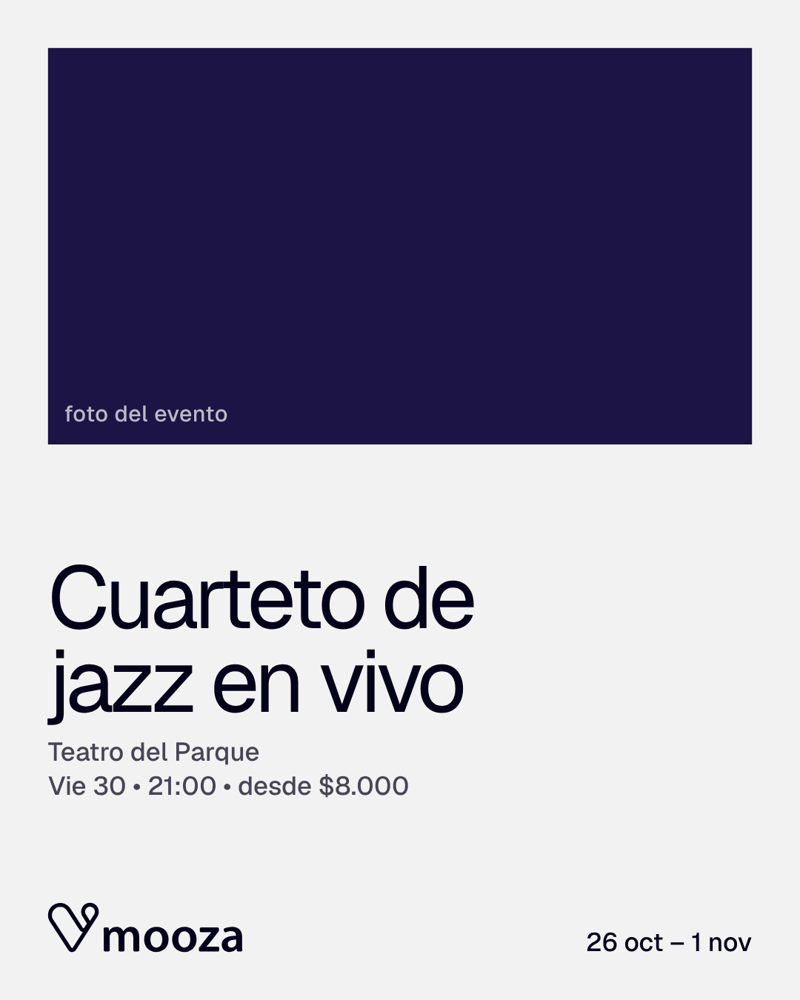
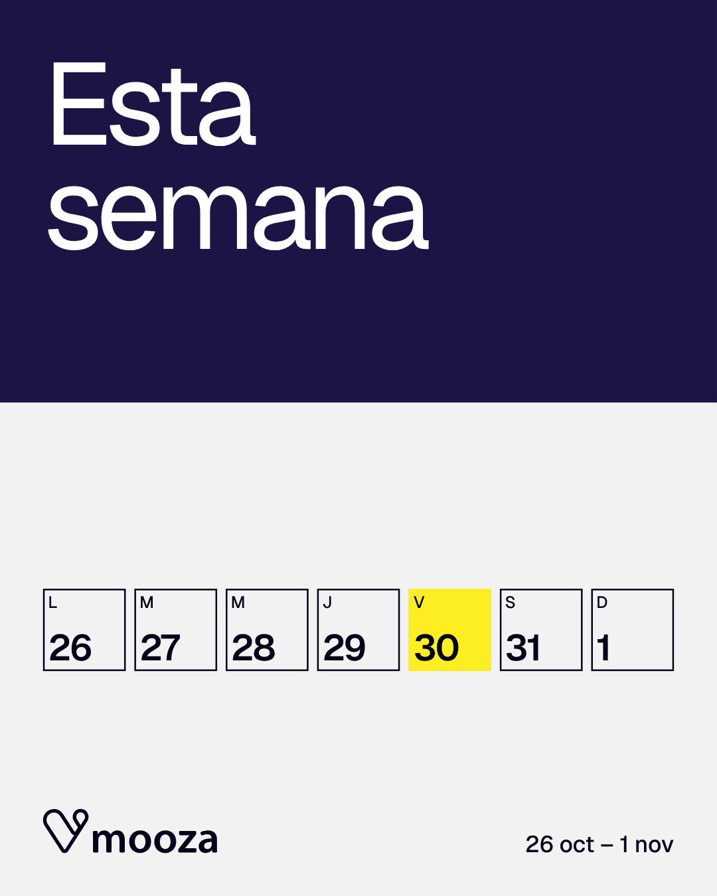
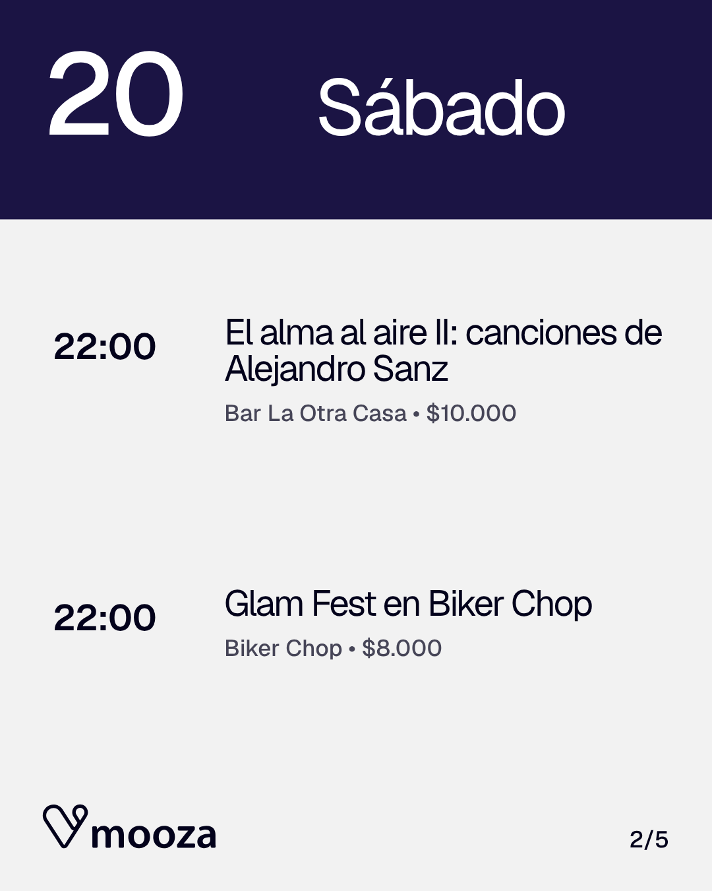
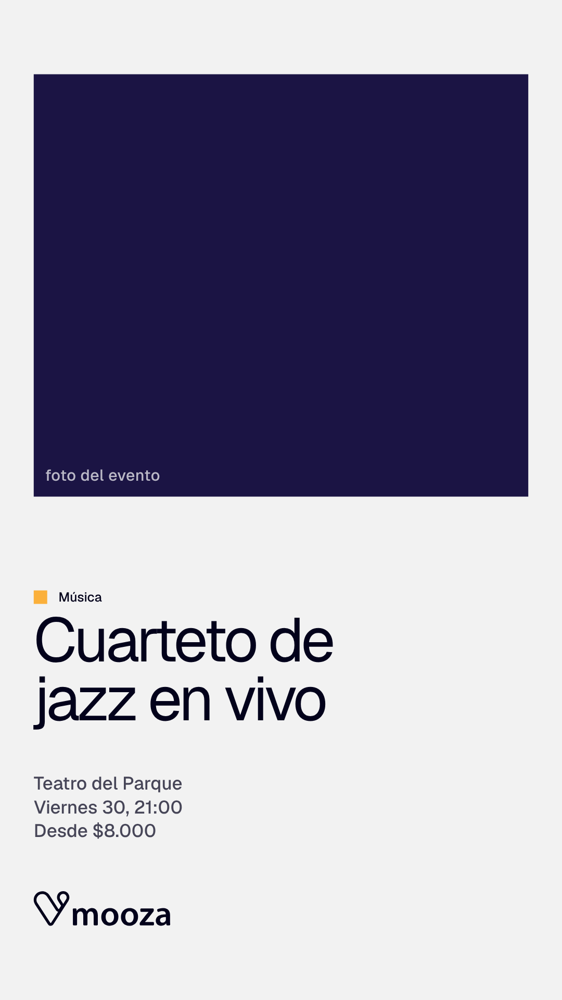